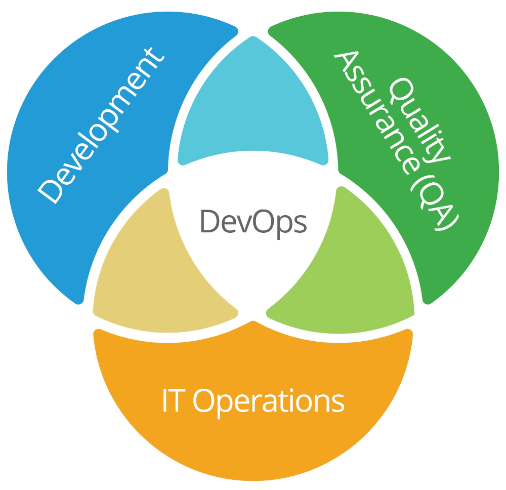

Argo CD újdonságok
Gábor AUTH (gabor.auth@iotguru.cloud)
Agenda
1. DevOps
2. Kubernetes
3. GitOps
4. Argo CD
5. Argo CD újdonságok
6. Összegzés, Q&A
1. DevOps

1.1. DevOps
"DevOps is the combination of cultural philosophies, practices, and tools that increases an organization’s ability to deliver applications and services at high velocity: evolving and improving products at a faster pace than organizations using traditional software development and infrastructure management processes."
1.1. DevOps
- olyan fejlesztő, aki tud üzemeltetni is (bullshit)
- olyan üzemeltető, aki tud fejleszteni is (bullshit)
- a fejlesztői infrastruktúrát üzemelteti (platform engineer)
- a felhős infrastruktúrát üzemelteti (cloud engineer)
- az alkalmazásüzemeltő (application operations engineer)
- DevOps is the combination of cultural philosophies... (ez!)
1.1. DevOps
Azt szoktam mondani, hogy a "nálunk a Béla a devopszos" kijelentés pont annyira hülyén kell hangozzon, mint az, hogy "nálunk a Józsi az agilis fejlesztő"...
...de úgy tűnik, hogy a "nálunk a Béla a devopszos" kijelentés velünk marad.
1.1. DevOps CI/CD loop

2. Kubernetes
Google "hobby-projekt"
Nyílt forrású 2014 óta
2020 óta kvázi szabvány
A neve “kormányos” görögül
Deklaratív konfiguráció
2.1. Mi is ez?
Service discovery & orchestration
Automated rollout and rollback
Configuration management
Health checks & rules
Load balancing
Self-healing
2.1. Mi is ez?

3.2. CLI
kubectl get podskubectl create deployment --image nginx nginxkubectl get podskubectl delete deployment nginxUpsz... ezt nem kellett volna... :D
2.3. YAML
Tegyük a cuccokat .yaml fájlba:
2.3. YAML
kubectl apply -f nginx.yamlkubectl get podskubectl delete deployment nginxUpsz... semmi baj!
kubectl apply -f nginx.yamlkubectl get pods2.3. YAML
2.4. Hogyan tovább?
Hol tároljuk ezeket a fájlokat?
Hogyan kezeljük ezeket a fájlokat?
Hogyan kövessük a változásokat?
Itt jön a képbe a GitOps!
3. GitOps
"GitOps uses Git repositories as a single source of truth to deliver infrastructure as code."
3. GitOps
single source of truth
3.1. Mi is ez?
Standard workflow
Improved reliability with visibility
Consistency across all environment
Increased security
3.2. Példa alkalmazás

3.2. Példa alkalmazás
3.2. Példa alkalmazás

3.2. Példa alkalmazás
3.2. Példa alkalmazás

3.3. Gitflow
3.3. Gitflow
4. Argo CD
"Argo CD is a declarative, GitOps continuous delivery tool for Kubernetes."
4.1. Mi is ez?
Create clusters with a known state.
Recover or recreate applications.
Apply or revert configuration changes.
Templated configuration with different environments.
4.1. Mi is ez?
A lánc, a kapocs vagy a ragasztó a GitOps és a Kubernetes között.
4.1. Mi is ez?
Argo CD alapja az 'application'
Minden 'application' Git repóban van definiálva
Tart magánál egy Git repó replikát, ha a Git nem lenne elérhető
Szinkronban tartja a Kubernetes állapotot a letárolt állapottal
4.2. Hogy néz ki?
4.2. Hogy néz ki?
4.2. Hogy néz ki?
5. Argo CD újdonságok
1. Argo CD base
2. Argo CD ApplicationSet generators
3. Argo CD plugins
4. Argo side projects
5.1. Argo CD base
KISS paradigma: keep-it-simple-stupid
minimális fejlesztések
kényelmi javítások
"Rancher"-pótlék
5.1.1. Argo CD v2.4 - Web terminal
5.1.1. Argo CD v2.4 - OpenTelemetry tracing
5.1.2. Argo CD v2.5 - Server side apply
5.1.2. Argo CD v2.5 - Project restrictions
5.1.3. Argo CD v2.6 - Plugin parameters
5.1.3. Argo CD v2.6 - multi-source

5.1.4. Argo CD v2.7 - Log UI
5.1.4. Argo CD v2.7 - Readinss gate UI
5.1.5. Argo CD v2.8 - Cronjob UI
5.1.5. Argo CD v2.8 - Collapsible pod list
5.1.6. Argo CD v2.9
controller shards
ignore ApplicationSet differences
5.1.7. Argo CD v2.10
ApplicationSet templates
UI authentication fejlesztések
server side diff UI
5.1.8. Argo CD v2.11
manual sync audit log
javított monorepo támogatás
újragondolt multi-source támogatás
5.1.9. Argo CD v2.12 - multi-source UI
5.2. Argo CD ApplicationSet generators
list generator: generate list of items
cluster generator: create cluster connections base on lists
git generator: create application based on git structure
matrix generator: combine two other generator in a matrix
5.2. Argo CD ApplicationSet generators
merge generator: merge two or more generators
SCM generator: discovery of SCM structure
pull request generator: create application based on pull request
cluster decision generator: create application based on cluster resources
5.3. Argo CD plugins
Helm, Kustomize and Jsonnet
Config Management Plugins
Sidecar telepíthetőek
5.3. Argo CD plugins
Vault plugin
Terraform plugin
sok egyéb közösségi plugin
5.3. Argo side projects
Argo Workflow - simple workflow engine
Argo Rollouts - deployment tools (blue-green, canary, etc.)
Argo Image updater - image updater
Argo Autopilot - Argo CD installer